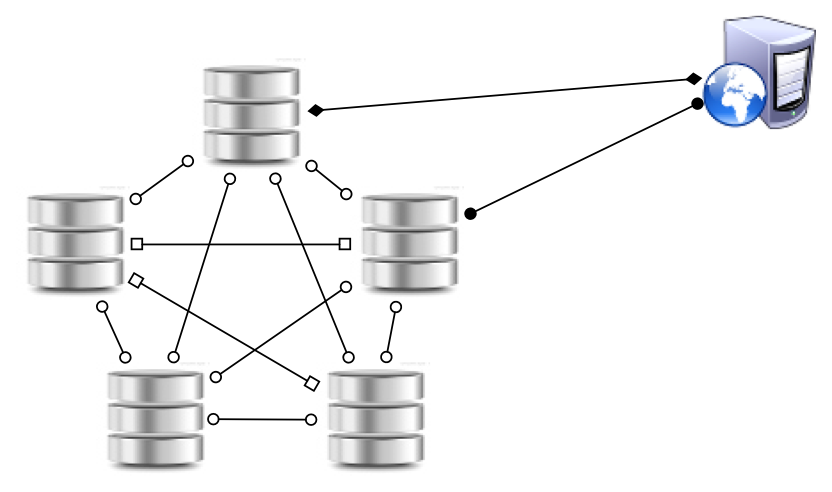

Big data modeling with Cassandra
Mat Brown
@0utoftime
github.com/outoftime
Rap Genius
Why Cassandra?
Distributed and Masterless
Optimized for writes

OK, but why Cassandra?

Tables, Rows, and Columns
| id | title | body |
|---|---|---|
| 1 | Big Data Modeling with Cassandra | In a traditional relational database, all your data... |
| 2 | Ulysses | Stately, plump Buck Mulligan came from the stairhead... |
CQL
SELECT title, body
FROM documents
WHERE id = 1
Why not Cassandra?
Schema constrains queries
SELECT * FROM posts
ORDER BY pageviews DESC

Data integrity constraints
ALTER TABLE posts MODIFY author_id NOT NULL;
CREATE UNIQUE INDEX login_idx
ON users (login_idx)
CQL < SQL
SELECT * FROM posts
INNER JOIN blogs ON posts.blog_id = blogs.id
LIMIT 10 OFFSET 20
Atomicity
BEGINDELETE FROM postsROLLBACKData Modeling
Let's make a blog!
Blog Table
CREATE TABLE blogs (
subdomain varchar PRIMARY KEY,
name varchar,
description varchar
)
Posts Table
CREATE TABLE posts (
blog_subdomain varchar,
id uuid,
title text,
author_id uuid,
PRIMARY KEY (blog_subdomain, id)
)
CREATE INDEX ON posts (author_id)
ALTER TABLE posts ADD categories set<text>
Under the hood
Column Families
{
"big-data" => {
1 => 'Cassandra',
2 => 'Riak',
4 => 'HBase'
},
"relational" => {
2 => 'SQLite',
7 => 'MySQL'
}
}
Column Families
big-data |
1 | 2 | 4 |
|---|---|---|---|
| Cassandra | Riak | HBase | |
relational |
2 | 7 | |
| SQLite | MySQL |
Wide rows stick together
big-data |
1 | 2 | 4 |
|---|---|---|---|
| Cassandra | Riak | HBase |
relational |
2 | 7 |
|---|---|---|
| SQLite | MySQL |
Compound Types
(2013-05-03, "bikini whale")
(2013-05-03, "manta ray")
(2013-07-08, "catfish")
(2013-07-08, "narwhal")
(2013-09-13, "giant clam")
Back to the blog
| blog_subdomain | id | title | body |
|---|---|---|---|
| mycat | 2013-05-08 | Jumping in a box | Taco loves jumping in boxes. |
| mycat | 2013-08-17 | Hungry Cat | Taco is always hungry when I get home from work. |
| code | 2013-07-08 | Big Data Modeling | In a traditional relational database, all your data... |
Back to the blog
| blog_subdomain | id | title | body |
|---|---|---|---|
| mycat | 2013-05-08 | Jumping in a box | Taco loves jumping in boxes. |
| mycat | 2013-08-17 | Hungry Cat | Taco is always hungry when I get home from work. |
| code | 2013-07-08 | Big Data Modeling | In a traditional relational database, all your data... |
Partition key
Clustering column
Data column name
Data column value
The Blog in Wide Rows
mycat |
(2013-05-08, "title") | (2013-05-08, "body") | (2013-08-17, "title") | (2013-08-17, "body") |
|---|---|---|---|---|
| Jumping in a box | Taco loves jumping in boxes. | Hungry Cat | Taco is always hungry when I get home from work. | |
code |
(2013-07-08, "title") | (2013-07-08, "body") | ||
| Big Data Modeling | In a traditional relational database, all your data... |
Partition key
Clustering column
Data column name
Data column value
Query-driven schema design
SELECT * FROM posts
WHERE blog_subdomain = "mycat"
ORDER BY id DESC
LIMIT 10
Range Queries
SELECT id, title FROM posts
WHERE blog_subdomain = "mycat"
AND id >= 2013-09-01
AND id <= 2013-09-31
Secondary indexes
SELECT id, title FROM posts
WHERE author_id = "9cafe670-16fc-11e3-8ffd-0800200c9a66"
LIMIT 10
Write without reading
UPDATE posts
SET title = 'Hungry Cat',
categories = categories + {'Dinner Time'}
WHERE blog_subdomain = 'mycat'
AND id = 2013-07-08
Simple primary keys
SELECT * FROM blogs
ORDER BY subdomain ASC
Simple primary keys
SELECT * FROM blogs
WHERE subdomain > "mycat"
Let's make this easy
http://github.com/cequel/cequel
$ gem install cequel --preDefine Models
class Blog < Cequel::Base
key :permalink, :text
column :name, :text
has_many :posts
end
class Post < Cequel::Base
belongs_to :blog
key :id, :timeuuid
column :title, :text
set :categories, :text
end
Use them
Blog['big-data'].posts.each do |post|
post.update_attributes!(
:title => post.title.upcase)
end